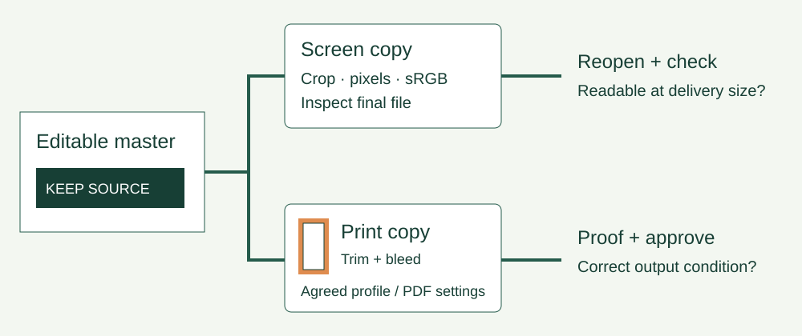

UNIT 3 APPLICATIONS AND PROJECTS
From master to delivery
Use the same workshop artwork for a screen notice and a printed handout. Learn to choose settings from a brief, inspect a colour profile and check the exported file.
Download editable pack Follow the tool operations · Blank proof record

1. Read the two output briefs
Screen notice
1260 × 888 pixels, JPEG, embedded sRGB, no bleed or trim marks, no more than 500,000 bytes. Keep the date, venue and joining instruction readable. The size limit is this fictional client’s requirement, not a universal rule.
Print handout
A5 landscape: 210 × 148 mm at trim, 3 mm bleed on every side, and at least 300 effective pixels per inch for raster artwork. Printer must confirm accepted PDF standard, destination profile, conversion policy and whether marks are wanted. These print-production choices are deliberately unresolved.
Decision point: you can produce the screen copy now. You can prepare a print layout, but cannot approve its colour-managed handoff until the printer’s conditions are known.
2. Inspect the supplied files
- Editable vector master: 216 × 154 mm canvas including bleed. Text remains editable, subject to available fonts. Browser SVG colours use sRGB values; this SVG is not an ICC-tagged print PDF.
- Tagged raster master: 2592 × 1848 pixels including bleed. The central 2520 × 1776 pixels correspond to the trim.
- Screen reference: generated from the trim area, resized and saved with an sRGB profile.
- Untagged comparison and low-resolution sample: deliberate teaching cases. An absent profile is an unknown in a real supplied file; do not guess its origin from appearance.


| File | Pixels | Embedded profile | Bytes |
|---|---|---|---|
| master-srgb.png | 2592 × 1848 | sRGB built-in | 86,385 |
| screen-reference.jpg | 1260 × 888 | sRGB built-in | 65,139 |
| untagged-comparison.png | 1260 × 888 | none | 78,631 |
| low-resolution.png | 420 × 296 | sRGB built-in | 27,297 |
Download the measured metadata. Identical-looking browser previews do not prove that both files carry the same profile. A palette is a choice of colours; a profile describes how colour values are interpreted.
3. Work from source to export
Use the concrete Photoshop and InDesign operations with school-approved desktop software, or an approved tool with equivalent ICC inspection, conversion and proofing functions. Record the application/version and actual settings; do not invent menu options for a tool that lacks them.
- Preserve the source. Inspect the embedded profile before changing it.
- Make a separate delivery copy. Crop bleed for the screen version; keep the required bleed in the print layout.
- Convert to a destination profile only when the workflow calls for it. Assigning a profile interprets existing numbers; conversion uses source and destination profiles to recalculate colour values.
- Export using the brief. Reopen the actual saved output and inspect dimensions, file size, profile and content.
- Proof the delivery copy, revise any issue and repeat the same check.
4. Check resolution at the placed size
Effective PPI = pixel width ÷ (placed width in mm ÷ 25.4). Use the artwork’s trim pixels with the trim width, rather than mixing the bleed canvas with trim dimensions.
2520 pixels across 210 mm gives 304.8 effective PPI.
Try 420 pixels at 210 mm. Changing a resolution label without adding real detail cannot restore sharp edges. Meeting a PPI target alone does not establish print quality.
5. Proof and justify the handoff
- Screen: reopen the JPEG; check the actual pixel dimensions, bytes and profile in a suitable inspector. Read the date and venue at intended display size.
- Print structure: check trim, bleed, safe text placement, missing fonts, linked assets and image resolution. Background artwork must extend through bleed; bleed is not extra safe space for text.
- Soft proof: simulate the agreed output condition in a colour-managed application, with a suitable display/profile. Inspect changed colours and contrast. An ordinary browser screenshot is not a printer soft proof.
- Hard proof: inspect a physical proof using the agreed printer, paper and process where required. A print from a different office printer is not a contract proof of the intended press condition.
- Record: log actual observations, proposed changes and retests in the blank record. Leave unknown or unperformed checks marked as such.
Model handoff decisions show an illustrative decision trail. The print outcome remains pending; no printer-specific profile, print-ready PDF or physical colour proof is claimed.
Teaching sequence and feedback
Ask learners to predict whether removing a profile must visibly change this browser preview. Model one metadata inspection, then let them inspect the second file. Next, compare the two output briefs and have learners justify one setting before export. Partners can alternate exporter and reviewer; independent learners can record a narrated check.
If a student chooses “CMYK” without naming the output condition, ask what the printer requested. If they choose a larger PPI label for the small image, return to the pixel-count calculation. Use this pack in place of a similar publication task. Native-tool operation and classroom suitability still need teacher verification.
Sources and verification
Primary documentation checked 18 October 2026: International Color Consortium FAQ, Adobe profile operations, Adobe proofing, Adobe PDF export.
Actual supplied-image dimensions, bytes and ICC presence were inspected. The screen export meets this pack’s numerical brief. Desktop editor exports, device calibration, printer-specific proofing and physical print approval have not been performed here.